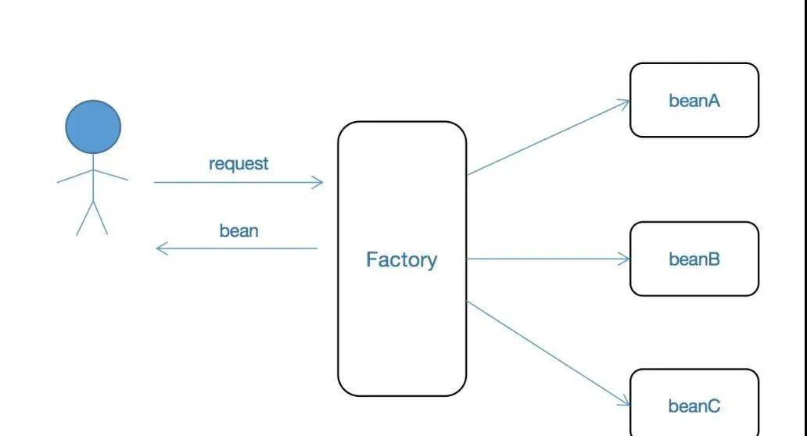

Spring 常用三种设计模式¶
关于设计模式，如果使用得当，将会使我们的代码更加简洁，并且更具扩展性。本文主要讲解Spring中如何使用策略模式，工厂方法模式以及Builder模式。
策略模式¶
关于策略模式的使用方式，在Spring中其实比较简单，从本质上讲，策略模式就是一个接口下有多个实现类，而每种实现类会处理某一种情况。
我们以发奖励为例进行讲解，比如我们在抽奖系统中，有多种奖励方式可供选择，比如积分，虚拟币和现金等。在存储时，我们必然会使用一个类似于type的字段用于表征这几种发放奖励的，那么这里我们就可以使用多态的方式进行奖励的发放。比如我们抽象出一个PrizeSender的接口，其声明如下：
public interface PrizeSender {
/**
* 用于判断当前实例是否支持当前奖励的发放
*/
boolean support(SendPrizeRequest request);
/**
* 发放奖励
*/
void sendPrize(SendPrizeRequest request);
}
// 积分发放
@Component
public class PointSender implements PrizeSender {
@Override
public boolean support(SendPrizeRequest request) {
return request.getPrizeType() == PrizeTypeEnum.POINT;
}
@Override
public void sendPrize(SendPrizeRequest request) {
System.out.println("发放积分");
}
}
// 虚拟币发放
@Component
public class VirtualCurrencySender implements PrizeSender {
@Override
public boolean support(SendPrizeRequest request) {
return PrizeTypeEnum.VIRTUAL_CURRENCY == request.getPrizeType();
}
@Override
public void sendPrize(SendPrizeRequest request) {
System.out.println("发放虚拟币");
}
}
// 现金发放
@Component
public class CashSender implements PrizeSender {
@Override
public boolean support(SendPrizeRequest request) {
return PrizeTypeEnum.CASH == request.getPrizeType();
}
@Override
public void sendPrize(SendPrizeRequest request) {
System.out.println("发放现金");
}
}
这里可以看到，在每种子类型中，我们只需要在support()方法中通过request的某个参数来控制当前request是否是当前实例能够处理的类型，如果是，则外层的控制逻辑就会将request交给当前实例进行处理。关于这个类的设计，有几个点需要注意：
- 使用@Component注解对当前类进行标注，将其声明为Spring容器所管理的一个bean；
- 声明一个返回boolean值的类似于support()的方法，通过这个方法来控制当前实例是否为处理目标request的实例；
- 声明一个类似于sendPrize()的方法用于处理业务逻辑，当然根据各个业务的不同声明的方法名肯定是不同的，这里只是一个对统一的业务处理的抽象；
- 无论是support()方法还是sendPrize()方法，都需要传一个对象进行，而不是简简单单的基本类型的变量，这样做的好处是后续如果要在Request中新增字段，那么就不需要修改接口的定义和已经实现的各个子类的逻辑；
工厂方法模式¶
上面我们讲解了如何使用Spring来声明一个策略模式，那么如何为不同的业务逻辑来注入不同的bean呢，或者说外层的控制逻辑是什么样的，这里我们就可以使用工厂方法模式了。
所谓的工厂方法模式，就是定义一个工厂方法，通过传入的参数，返回某个实例，然后通过该实例来处理后续的业务逻辑。一般的，工厂方法的返回值类型是一个接口类型，而选择具体子类实例的逻辑则封装到了工厂方法中了。通过这种方式，来将外层调用逻辑与具体的子类的获取逻辑进行分离。如下图展示了工厂方法模式的一个示意图：

可以看到，工厂方法将具体实例的选择进行了封装，而客户端，也就是我们的调用方只需要调用工厂的具体方法获取到具体的事例即可，而不需要管具体的实例实现是什么。 上面我们讲解了Spring中是如何使用策略模式声明处理逻辑的，而没有讲如何选择具体的策略，这里我们就可以使用工厂方法模式。 如下是我们声明的一个PrizeSenderFactory：
@Component
public class PrizeSenderFactory {
@Autowired
private List<PrizeSender> prizeSenders;
public PrizeSender getPrizeSender(SendPrizeRequest request) {
for (PrizeSender prizeSender : prizeSenders) {
if (prizeSender.support(request)) {
return prizeSender;
}
}
throw new UnsupportedOperationException("unsupported request: " + request);
}
}
这里我们声明一个了一个工厂方法getPrizeSender()，其入参就是SendPrizeRequest，而返回值是某个实现了PrizeSender接口的实例，可以看到，通过这种方式，我们将具体的选择方式下移到了具体的子类中的，因为当前实现了PrizeSender的bean是否支持当前request的处理，是由具体的子类实现的。
在该工厂方法中，我们也没有任何与具体子类相关的逻辑，也就是说，该类实际上是可以动态检测新加入的子类实例的。这主要是通过Spring的自动注入来实现的，主要是因为我们这里注入的是一个List，也就是说，如果有新的PrizeSender的子类实例，只要其是Spring所管理的，那么都会被注入到这里来。下面就是我们编写的一段用于测试的代码来模拟调用方的调用：
@Service
public class ApplicationService {
@Autowired
private PrizeSenderFactory prizeSenderFactory;
public void mockedClient() {
SendPrizeRequest request = new SendPrizeRequest();
request.setPrizeType(PrizeTypeEnum.POINT); // 这里的request一般是根据数据库或外部调用来生成的
PrizeSender prizeSender = prizeSenderFactory.getPrizeSender(request);
prizeSender.sendPrize(request);
}
}
在客户端代码中，首先通过PrizeSenderFactory获取一个PrizeSender实例，然后通过其sendPrize()方法发放具体的奖励，通过这种方式，将具体的奖励发放逻辑与客户端调用进行了解耦。而且根据前面的讲解，我们也知道，如果新增了一种奖励方式，我们只需要声明一个新的实现了PrizeSender的bean即可，而不需要对现有代码进行任何修改。
Builder模式¶
关于Builder模式，我想使用过lombok的同学肯定会说builder模式非常的简单，只需要在某个bean上使用@Builder注解进行声明即可，lombok可以自动帮我们将其声明为一个Builder的bean。关于这种使用方式，本人不置可否，不过就我的理解，这里主要有两个点我们需要理解：
1、Builder模式就其名称而言，是一个构建者，我更倾向于将其理解为通过一定的参数，通过一定的业务逻辑来最终生成某个对象。如果仅仅只是使用lombok的这种方式，其本质上也还是创建了一个简单的bean，这个与通过getter和setter方式构建一个bean是没有什么大的区别的； 2、在Spring框架中，使用设计模式最大的问题在于如果在各个模式bean中能够注入Spring的bean，如果能够注入，那么将大大的扩展其使用方式。因为我们就可以真的实现通过传入的简单的几个参数，然后结合Spring注入的bean进行一定的处理后，以构造出我们所需要的某个bean。显然，这是lombok所无法实现的； 关于Builder模式，我们可以以前面奖励发放的SendPrizeRequest的构造为例进行讲解。在构造request对象的时候，必然是通过前台传如的某些参数来经过一定的处理，最后生成一个request对象。那么我们就可以使用Builder模式来构建一个SendPrizeRequest。
这里假设根据前台调用，我们能够获取到prizeId和userId，那么我们就可以创建一个如下的SendPrizeRequest：
public class SendPrizeRequest {
private final PrizeTypeEnum prizeType;
private final int amount;
private final String userId;
public SendPrizeRequest(PrizeTypeEnum prizeType, int amount, String userId) {
this.prizeType = prizeType;
this.amount = amount;
this.userId = userId;
}
@Component
@Scope("prototype")
public static class Builder {
@Autowired
PrizeService prizeService;
private int prizeId;
private String userId;
public Builder prizeId(int prizeId) {
this.prizeId = prizeId;
return this;
}
public Builder userId(String userId) {
this.userId = userId;
return this;
}
public SendPrizeRequest build() {
Prize prize = prizeService.findById(prizeId);
return new SendPrizeRequest(prize.getPrizeType(), prize.getAmount(), userId);
}
}
public PrizeTypeEnum getPrizeType() {
return prizeType;
}
public int getAmount() {
return amount;
}
public String getUserId() {
return userId;
}
}
这里就是使用Spring维护一个Builder模式的示例，具体的 维护方式就是在Builder类上使用@Component和@Scope注解来标注该Builder类，这样我们就可以在Builder类中注入我们所需要的实例来进行一定的业务处理了。关于该模式，这里有几点需要说明：
-
在Builder类上必须使用@Scope注解来标注该实例为prototype类型，因为很明显，我们这里的Builder实例是有状态的，无法被多线程共享；
-
在Builder.build()方法中，我们可以通过传入的参数和注入的bean来进行一定的业务处理，从而得到构建一个SendPrizeRequest所需要的参数；
-
Builder类必须使用static修饰，因为在Java中，如果内部类不用static修饰，那么该类的实例必须依赖于外部类的一个实例，而我们这里本质上是希望通过内部类实例来构建外部类实例，也就是说内部类实例存在的时候，外部类实例是还不存在的，因而这里必须使用static修饰；
-
根据标准的Builder模式的使用方式，外部类的各个参数都必须使用final修饰，然后只需要为其声明getter方法即可。
上面我们展示了如何使用Spring的方式来声明一个Builder模式的类，那么我们该如何进行使用呢，如下是我们的一个使用示例：
@Service
public class ApplicationService {
@Autowired
private PrizeSenderFactory prizeSenderFactory;
@Autowired
private ApplicationContext context;
public void mockedClient() {
SendPrizeRequest request = newPrizeSendRequestBuilder()
.prizeId(1)
.userId("u4352234")
.build();
PrizeSender prizeSender = prizeSenderFactory.getPrizeSender(request);
prizeSender.sendPrize(request);
}
public Builder newPrizeSendRequestBuilder() {
return context.getBean(Builder.class);
}
}
上述代码中，我们主要要看一下newPrizeSendRequestBuilder()方法，在Spring中，如果一个类是多例类型，也即使用@Scope("prototype")进行了标注，那么每次获取该bean的时候就必须使用ApplicationContext.getBean()方法获取一个新的实例，至于具体的原因，读者可查阅相关文档。
我们这里就是通过一个单独的方法来创建一个Builder对象，然后通过流式来为其设置prizeId和userId等参数，最后通过build()方法构建得到了一个SendPrizeRequest实例，通过该实例来进行后续的奖励发放。
小结¶
本文主要通过一个奖励发放的示例来对Spring中如何使用工厂方法模式，策略模式和Builder模式的方式进行讲解，并且着重强调了实现各个模式时我们所需要注意的点。